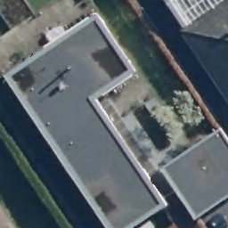

from IPython.display import YouTubeVideo
YouTubeVideo('CQlLa_UWncg')Tutorial: Image Segmentation of Aerial Imagery

Authors:
- Gabriel da Silva Zech (GabZech)
- Julian Kath (juka19)
- Krishnamoorthy Manohara (KrishnaM313)
- Florian Winkler (f-winkler)
- Nassim Zoueini (nassimzoueini)
This tutorial provides an end-to-end workflow of image segmentation based on aerial images. It introduces a U-net convolutional neural network approach to segmenting buildings from aerial imagery as a specific application of deep learning in a public policy context. Built in a PyTorch environment, the tutorial provides users step-by-step explanations of image segmentation and an example of reproducible, working code in a self-contained notebook. Users will benefit from a structured and practical overview of how to collect and pre-process aerial image data, how to create a custom dataset that annotates aerial images using building footprints, and how to train and fine-tune an image segmentation model on aerial imagery. The tutorial can be extended to further projects that involve a similar approach to aerial or satellite image segmentation, such as segmenting roads or crop fields.
All related files can be found in the following repository: https://github.com/GabZech/building-segmentation-tutorial
Table of Contents
Introduction
Image segmentation is a digital image processing method which divides an image into similar segments by assigning labels to each pixel in an image. A prime application of computer vision that uses deep learning, image segmentation leverages artificial intelligence (AI) to identify objects in a large number of images, localize their boundaries, and delineate areas for further processing.
While image segmentation has traditionally been used in medical imaging, agriculture and self-driving vehicles, segmentation of satellite and aerial images bears tremendous potential for applications in public policy. Computer vision adds significant value in both the speed and accuracy of insights from high-resolution imagery from space where the human eye is unable to detect relevant information. Image segmentation helps governments operate more efficiently by automating detection, localization, measurement and monitoring activities from space.
In the energy and infrastructure domain, the segmentation of buildings from satellite and aerial images can be used by governments and energy providers to forecast energy supply, e.g. by measuring rooftops’ solar power potential. In addition, image segmentation helps authorities monitor critical infrastructure, such as power lines or railways, from space in real time. For example, a collaboration between space startup LiveEO and Deutsche Bahn leverages image segmentation for near-real time vegetation management along railway tracks in Germany.
In smart cities, local governments can use image segmentation of roads, vehicles and pedestrians for trafic control systems, pedestrian detection and video surveillance. Moreover, image segmentation allows urban planners to analyse the use of land cover for planning purposes, e.g. distinguishing agricultural land and residential areas in large areas for further processing.
Supporting environmental protection, image segmentation also enables governments to monitor environmental changes from space, e.g. by measuring deforestation or desertification. Finally, satellite and aerial image segmentation can provide crucial help to authorities in disaster response, such as wildfires, floods or landslides, e.g. by measuring and monitoring impacted areas.
Project Overview
Applying segmentation to aerial images from the region of North Rhine-Westphalia (NRW) in Germany, this tutorial showcases the use of image segmentation as a powerful method of deep learning to segment buildings from aerial imagery. For educational purposes, we choose aerial over satellite images due to better data quality and higher resolutions provided by our data source GEOportal.NRW. Satellite images are increasingly available in moderate to high resolutions, decreasing in cost, and a key driver of deep learning applications and open data approaches in public policy. Aerial images, i.e. photographs taken from aircrafts or drones, provide users with images of even higher resolutions, albeit at the cost of accessibility and availability. Both satellite and aerial images are suitable data sources for image segmentation tasks, with little differences in particular segmentation techniques between them.
This tutorial walks through every step of a real-world image segmentation project, covering tasks from data collection, data pre-processing and image annotation, model training and testing as well as visualizing results. Overall, the tutorial makes two major contributions to users in a pedagogical, step-by-step workflow:
Image annotation: In order to train a building segmentation algorithm, it is necessary to have a labelled dataset of aerial images which essentially tells a model which object in a aerial image is actually a building. Commonly referred to as “ground truth”, the annotated dataset is used to train a model to extract representational features of buildings. “Learning” the boundaries and features of buildings from labelled data subsequently allows the model to segment buildings on previously unseen aerial images. Labelled datasets of buildings can either be obtained from existing data sources for aerial or satellite images (see Rob Cole’s invaluable list of annotated datasets for segmentation for satellite images for instance) or created on your own. To demonstrate the steps of collecting and pre-processing a aerial image dataset, this tutorial shows how to create a custom labeled dataset using aerial images and building footprints. In more technical terms, we use geo-referenced polygon shapes of buildings to lay building footprints on top of aerial images in order to create so-called image-mask pairs for each location.
Training an image segmentation model: The second key contribution of this tutorial is a real-world implementation of training and fine-tuning an image segmentation algorithm to segment buildings in aerial images. Applying a U-net convolutional neural network to our previously annotated dataset, we show how to use the image-mask pairs to train a binary (single-class) segmentation model that is able to identify, localize and delineate buildings in previously unseen aerial images.
Background & Prerequisites
Following this tutorial requires working knowledge in Python and basic knowledge of deep neural networks such as convolutional neural networks. For the most important concepts of our tutorial, a brief explanation of image segmentation techniques, image annotation and the U-Net model architecture that we use are presented.
Different types of image segmentation: Semantic segmentation, instance segmentation and panoptic segmentation are specialist techniques of image segmentation of ascending complexity. In semantic segmentation, labeling each pixel in an image with a class enables the identification of objects that contain the same target class (such as “building” or “road”). Instance segmentation identifies and delineates each individual object in an image, for example distinguishing between individual buildings or roads. Panoptic segmentation combines semantic and instance segmentation, so that all pixels in the image are labelled as foreground objects or background. With each extension, annotation of satellite and aerial images will become more time and labour intensive. Single class segmentation is often used for road or building segmentation, with multi class models trained for land use or crop type classification. For introductory purposes, our tutorial showcases the application of single-class semantic segmentation (buildings vs. no building). However, our framework can be adapted in the future to implement instance or panoptic segmentation methods.
Satellite and aerial image annotation: There are two common approaches to annotate boundaries of buildings in satellite or aerial images. The first approach is annotating every pixel in an image, producing pixel-level mask files as output. In our binary example of buildings vs. no buildings, this mask image would use pixel values of 0 to represent background (no buildings) and a non-zero value to represent buildings (see a detailed explanation here). In the second approach, a text file is provided which lists the polygon boundaries (geometries) of objects in an image. Since annotating every pixel is very time consuming, using polygon data for objects of interest is usually more efficient. There are however many annotation tools that provide a ‘smart assist’ to accelerate pixel-level annotation, for example Roboflow. Applying the more common second approach, we use geo-referenced polygon shapes of buildings to annotate aerial images. These building footprints are available to download from NRW’s GeoPortal.
U-Net Convolutional Neural Network: Showcasing a deep learning approach to image segmentation, we use a simplified version of the U-Net architecture as our semantic segmentation algorithm. U-Net is a convolutional neural network that originally developed for biomedical image segmentation. The U-Net model takes two inputs: The aerial image patches and the annotated image-mask pair that has a class label for each pixel. U-Net is a so-called encoder-decoder model where the encoder part performs downsampling (reducing the image resolution) and the encoder part peforms upsampling and concatenation (increasing the image resolution). While sparing you the technical details of the U-Net architecture (which can be found here, if interested), the U-Net has a distinct characterstic that makes it suitable for image segmentation tasks: In upsampling, the lower resolution features learnt by the encoder part are projected onto higher resolution. This allows the output prediction of our segmentation model to be an image of the same resolution as the input image (unlike traditional classification models where the output prediction is only a class label). Essentially, the U-Net is able to reduce the input image to only the key features of interest by reducing the resolution, and then scales them up to obtain the mask.
Videos
For a head start into image segmentation and inspiration for future projects, we recommend watching the following videos which introduce deep learning to satellite and aerial images and walk through the implementation of image segmentation using a similar U-net architecture we have chosen for this tutorial.
Video 1: When deep learning meets satellite imagery (by Preligens)
Video 2: Semantic segmentation of aerial (satellite) imagery using U-net (by DigitalSreeni)
from IPython.display import YouTubeVideo
YouTubeVideo('jvZm8REF2KY')Video 3: PyTorch Image Segmentation Tutorial with U-NET: everything from scratch baby (by Aladdin Persson)
from IPython.display import YouTubeVideo
YouTubeVideo('IHq1t7NxS8k')Reading materials
Introductory articles
- Robin Cole (2022): A brief introduction to satellite image segmentation with neural networks.
- Vooban (2017): Satellite Image Segmentation: a Workflow with U-Net.
- Google Research (2019): Mapping Africa’s Buildings with Satellite Imagery.
- For an example of building segmentation, see Jhansi Anumula (2019): Semantic Segmentation on Aerial Images using fastai.
Datasets and tools
A large number of semantic segmentation datasets are available online, varying in spatial resolution, sensor modality and target class (vegetation, roads, building, etc). More recently, efforts have been made to collect relevant data resources in consolidated repositories.
- Robin Cole’s great collection of resources and data sets of deep learning applied to satellite imagery, including segmentation
- Awesome Semantic Segmentation
- For a collection of annotated data sets, see Awesome_Satellite_Benchmark_Datasets repository (search for ‘SemSeg’)
- Google’s Open Buildings dataset with building footprints in Africa and South East Asia
- MMSegmentation is an open source semantic segmentation toolbox with support for many remote sensing datasets
Tutorials with code
- Maurício Cordeiro (2020): Creating a Very Simple U-Net Model with PyTorch for Semantic Segmentation of Satellite Images.
- Raoof Naushad (2020): Image Semantic Segmentation of Satellite Imagery using U-Net.
- Deep Learning Berlin (2021): Detecting Buildings in Satellite Images.
- For an example of instance segmentation, see the Building-Detection-MaskRCNN repository for building detection by using a Mask RCNN model architecture.
Software Requirements
This notebook requires Python >= 3.7.9 The following libraries are required:
- Data manipulation: pandas, numpy
- Geospatial data processing libraries: geopandas, rasterio, shapely
- Deep learning architecture: PyTorch
- Image processing libraries: patchify, cv2, PIL
- General helper modules: urllib, xml.etree.ElementTree, io, zipfile, time, os
Workflow
The workflow as described below, will be the basis of this tutorial. We first start by retrieving the data from the mentioned sources, preprocess it in order to make it ready for the model training then finally train the model and extract results.

After examining the different parts of the process, let us start by installing the required packages:
import os
import rasterio
import rasterio.mask
from rasterio.features import rasterize
import pandas as pd
import geopandas as gpd
from shapely.geometry import Polygon
import numpy as np
import cv2
from patchify import patchify
from PIL import Image
import PIL.ImageOps
import urllib
import xml.etree.ElementTree as ET
import shapely
from io import BytesIO
from zipfile import ZipFile
import time
import torch
from torch import nn
from torch.utils.data import Dataset, DataLoader
rs = 42Data Description
The data that we will be using in this tutorial is publicly available on the geoportal of the North-Rhine-Westphalia State of Germany on https://www.opengeodata.nrw.de.
For visual reference, this is how an aerial image looks like in the geoportal:

The aerial images were retrieved as individual 10000x10000 pixel tiles from the geoportal’s Digital Orthophotos service. The building footprints were queried from an attached geo-webservice that can be queried by providing the bounding box of the area of interest.
The open data provides aerial imagery of the state with a resolution of 10 centimeters per pixel, that are all geolocated and time-stamped. The building footprints are provided in Geography Markup Language, an XML variant. A sample of the data will be shown below.
Data Download
The metadata provided by the NRW online portal is accessible through this link https://www.opengeodata.nrw.de/produkte/geobasis/lusat/dop/dop_jp2_f10/dop_meta.zip

Step 1: Download tile data paths (aerial images and metadata)
The first step is to download the metadata containing information about all individual 1kmx1km image tiles (named “Kachelname”), which will later be used to download the images.
This data is provided in the following csv file:
url_metadata = "https://www.opengeodata.nrw.de/produkte/geobasis/lusat/dop/dop_jp2_f10/dop_meta.zip"
trgt_filename = 'dop_nw.csv'
response = urllib.request.urlopen(url_metadata)
zipfile = ZipFile(BytesIO(response.read()))
metadata = pd.read_csv(zipfile.open(trgt_filename),
sep=';',
skiprows=5) # skip first 5 rows with irrelevant metadata
metadata.head(10)| Kachelname | Erfassungsmethode | Aktualitaet | Bildflugnummer | Kamera_Sensor | Bodenpixelgroesse | Spektralkanaele | Koordinatenreferenzsystem_Lage | Koordinatenreferenzsystem_Hoehe | Bezugsflaeche | ... | Anzahl_Zeilen | Farbtiefe | Standardabweichung | Dateiformat | Hintergrund | Quelldatenqualitaet | Kompression | Komprimierung | Belaubungszustand | Bemerkungen | |
|---|---|---|---|---|---|---|---|---|---|---|---|---|---|---|---|---|---|---|---|---|---|
| 0 | dop10rgbi_32_375_5666_1_nw_2021 | 0 | 2021-06-02 | 1358/21 Leverkusen Wuppertal | DMCIII-27569_DMCIII | 10 | RGBI | 25832 | 7837 | bDOM | ... | 10000 | 8 | 20 | JPEG2000 | 0 | 1 | 1 | GDAL_JP2ECW, 90 | 3 | keine |
| 1 | dop10rgbi_32_438_5765_1_nw_2022 | 0 | 2022-03-10 | 1377/22 Greven Ibbenbüren | UCEM3-431S91898X119229-f100_UCE-M3 | 10 | RGBI | 25832 | 7837 | bDOM | ... | 10000 | 8 | 20 | JPEG2000 | 0 | 1 | 1 | GDAL_JP2ECW, 90 | 1 | keine |
| 2 | dop10rgbi_32_366_5723_1_nw_2020 | 0 | 2020-03-23 | 1333/20 Wesel Marl | UCEp-1-31011051_UCEp | 10 | RGBI | 25832 | 7837 | bDOM | ... | 10000 | 8 | 20 | JPEG2000 | 0 | 1 | 1 | GDAL_JP2ECW, 90 | 1 | keine |
| 3 | dop10rgbi_32_344_5645_1_nw_2021 | 0 | 2021-03-02 | 1355/21 Düsseldorf Kerpen | UCEM3-431S71678X_UCE-M3 | 10 | RGBI | 25832 | 7837 | bDOM | ... | 10000 | 8 | 20 | JPEG2000 | 0 | 1 | 1 | GDAL_JP2ECW, 90 | 1 | keine |
| 4 | dop10rgbi_32_407_5744_1_nw_2022 | 0 | 2022-03-03 | 1379/22 Warendorf | DMCIII-27532_DMCIII | 10 | RGBI | 25832 | 7837 | bDOM | ... | 10000 | 8 | 20 | JPEG2000 | 0 | 1 | 1 | GDAL_JP2ECW, 90 | 1 | keine |
| 5 | dop10rgbi_32_397_5744_1_nw_2022 | 0 | 2022-02-27 | 1378/22 Bocholt Coesfeld | UCEp-1-31011051-f100_UCEp | 10 | RGBI | 25832 | 7837 | bDOM | ... | 10000 | 8 | 20 | JPEG2000 | 0 | 1 | 1 | GDAL_JP2ECW, 90 | 1 | keine |
| 6 | dop10rgbi_32_313_5624_1_nw_2021 | 0 | 2021-03-07 | 1356/21 Aachen Kronenburg | UCEM3-1-82416042_UCE-M3 | 10 | RGBI | 25832 | 7837 | bDOM | ... | 10000 | 8 | 20 | JPEG2000 | 0 | 1 | 1 | GDAL_JP2ECW, 90 | 1 | keine |
| 7 | dop10rgbi_32_335_5702_1_nw_2020 | 0 | 2020-03-24 | 1334/20 Duisburg Herne | UCEM3-431S51194X_UCE-M3 | 10 | RGBI | 25832 | 7837 | bDOM | ... | 10000 | 8 | 20 | JPEG2000 | 0 | 1 | 1 | GDAL_JP2ECW, 90 | 1 | keine |
| 8 | dop10rgbi_32_388_5791_1_nw_2022 | 0 | 2022-02-23 | 1376/22 Ahaus Rheine | UCEM3-431S41091X314298-f100_UCE-M3 | 10 | RGBI | 25832 | 7837 | bDOM | ... | 10000 | 8 | 20 | JPEG2000 | 0 | 1 | 1 | GDAL_JP2ECW, 90 | 1 | keine |
| 9 | dop10rgbi_32_304_5671_1_nw_2021 | 0 | 2021-02-20 | 1354/21 Mönchengladbach- Würselen | UCEM3-431S72402X_UCE-M3 | 10 | RGBI | 25832 | 7837 | bDOM | ... | 10000 | 8 | 20 | JPEG2000 | 0 | 1 | 1 | GDAL_JP2ECW, 90 | 1 | keine |
10 rows × 23 columns
Step 2: Retrieve shapefiles (building footprints)
The next step would be to retrieve the building footprints which will help generating the polygons that delimit the building contours in order to create the masks to be associated to the images at a later stage.
For a visual reference, the building footprint data looks like this:

The retrieved tuples related to the building footprints were used to create the bounding boxes used to query the geo webservice. With regards to our tutorial, only the bounding box of the tiles is a changing parameter of the webservice queries, a full documentation can be found here. The response is a GML file, which is in fact an XML file with a specific namespace, containing the building footprints of all buildings within the bounding box, as well as additional metadata. The building footprints then wer converted to shapefile polygons and saved in a geopandas dataframe with the coordinate reference system from the tile. The geopandas dataframe containing the shapefiles of all buildings within the bounding box of the tile then can be passed as input to the mask generation.
To this end, we define the get_shapefile function - Input: bounding box values (only north and east, rest is inferred from tile size) as a tuple - Output: geopandas dataframe with polygons of all buildings on the tile
def get_shapefile(bbox2:tuple, crs='EPSG:25832') -> gpd.GeoDataFrame:
base_url = "https://www.wfs.nrw.de/geobasis/wfs_nw_alkis_vereinfacht?SERVICE=WFS&VERSION=2.0.0&REQUEST=GetFeature&TYPENAMES=ave:GebaeudeBauwerk&BBOX="
x, y = bbox2 # unpack tuple
x2 = x + 1000 # get second lat/lon value for bounding box (always 10000*10000)
y2 = y + 1000
bbox4 = (x, y, x2, y2)
bbox_str = ','.join(list(map(str, bbox4))) # create bounding box string for API query
gml_url = ''.join([base_url, bbox_str])
req = urllib.request.Request(gml_url) # query webservice
req.get_method = lambda: 'GET'
response = urllib.request.urlopen(req)
gml_str = response.read()
root = ET.ElementTree(ET.fromstring(gml_str)).getroot() # response is formatted as GML, which can be queried like normal XML, by referencing the relevant namespaces
namespace = {'gml': "http://www.opengis.net/gml/3.2",
'xmlns': "http://repository.gdi-de.org/schemas/adv/produkt/alkis-vereinfacht/2.0",
'wfs': "http://www.opengis.net/wfs/2.0",
'xsi': "http://www.w3.org/2001/XMLSchema-instance"
}
buildings = [i.text for i in root.findall('.//gml:posList', namespace)]
funktions = [i.text for i in root.iter('{http://repository.gdi-de.org/schemas/adv/produkt/alkis-vereinfacht/2.0}funktion')]
ids = [i.items()[0][1] for i in root.findall('.//gml:MultiSurface[@gml:id]', namespace)]
building_shapefiles = []
for id, funktion, build in zip(ids, funktions, buildings):
coord_iter = iter(build.split(' ')) # coordinates are not in the correct format, therefore need to be rearranged
coords = list(map(tuple, zip(coord_iter, coord_iter)))
poly = shapely.geometry.Polygon([[float(p[0]), float(p[1])] for p in coords]) # create shapefile from points
building_shapefiles.append({'id': id, 'funktion':funktion, 'geometry': poly}) # create records of each building on the selected tile
df = pd.DataFrame.from_records(building_shapefiles)
gdf = gpd.GeoDataFrame(df, crs=crs) # return geopandas dataframe for input that can be passed to the mask generation
return gdfData Preprocessing
Now, all the data is retrieved and ready to be pre-processed for image segmentation and the specific requirements of the U-Net model.
This stage essentially consists of creating the image-mask pairs that will train the model. For this step, we used code by Lucas Pedrosa Soares.
As a first step, the building footprint shapefiles in the geopandas dataframe were concatenated and merged into one single polygon (this is because we are implementing semantic segmentation and are not interested in an instance segmentation task). This polygon is then used to create a mask for the corresponding image tile.
Next, the images and masks will be divided into several patches (the size of these patches corresponds to the input size of the U-Net model). We implemented this step once yielding a saved png and once a tensor. The function can be used for both images and masks.

Step 3: Combine shapefile to polygon
As a small helper function we used poly_from_utm which aligns all polygons to the image coordinate reference system (crs). This is not strictly neccessary, as shapefiles and images should all use the same crs (EPSG:25832) but was included as an additional step to ensure compatibility in case this may change, since the crs of the shapefile is hardcoded in the the retrieval function. - Input: polygon and image crs - Output: transformed polygon, aligned with the crs of the image
def poly_from_utm(polygon, transform):
poly_pts = []
poly = shapely.ops.unary_union(polygon)
for i in np.array(poly.exterior.coords):
# Convert polygons to the image CRS
poly_pts.append(~transform * tuple(i))
# Generate a polygon object
new_poly = Polygon(poly_pts)
return new_polyStep 4: Generate Masks
Masks are generated using the function generate_masks described as follows:
First, the image url (constructed from the Kachelname column in the dataframe in cell 9.1.1 and a base url) is used to download the image. The image is opened with rasterio, extracting the crs information from the image’s metadata. Finally, all polygons from the geopandas dataframe containing all the shapefiles, are combined and individually aligned to the crs of the image.
- Input: geopandas dataframe and tile-image path
- Output: mask and image in 1000-1000 pixels
def generate_mask(shapefiles, img_url):
with rasterio.open(img_url, "r") as src:
raster_img = src.read()
raster_meta = src.meta
# Generate binary mask
polygons = []
im_size = (raster_meta["height"], raster_meta["width"])
for _, row in shapefiles.iterrows():
if row['geometry'].geom_type == 'Polygon':
poly = poly_from_utm(row['geometry'], raster_meta["transform"])
polygons.append(poly)
else:
for p in row['geometry']:
poly = poly_from_utm(p, raster_meta["transform"])
polygons.append(poly)
mask = rasterize(shapes=polygons, out_shape=im_size)
return mask, raster_imgStep 5: Patchify and save images and masks
In order to divide the images and masks into the patches, we define the load_and_patchify function described with the below:
The requires the specification of the number of channels, as this impacts the patchification step. This lets us use the function for both masks and images. As a first step, the image is cropped to a size divisable by the patch size (which corresponds to the model input). Then, the image is divided into patches and saved as a png into the output folder. We later implemented a similar function which does not save the patches as png-images but saves them as tensors, as this was more compatible with the chosen modelling approach.
- Input: mask OR image, patch_size (should correspond to input size for model), path to output folder (e.g. masks or images), a string identifying each individual 1000-1000 tile (needs to be unique, otherwise output will be overwritten), number of channels (for masks: None, for images: 4)
- Output: saves individual images as png files into the specified output folder
def load_and_patchify(img, patch_size, output_path, tile_identifier, num_channels=None):
if num_channels: # this handles pictures
size_x = (img.shape[1]//patch_size) * patch_size
size_y = (img.shape[2]//patch_size) * patch_size
img = img[:, :size_x, :size_y] # subsets image (input size is not neccessarily divisible by patch size)
patch_img = patchify(img, (num_channels, patch_size, patch_size), step=patch_size)
patch_img = np.squeeze(patch_img)
else: # this handles masks
size_x = (img.shape[0]//patch_size) * patch_size
size_y = (img.shape[1]//patch_size) * patch_size
img = img[:size_x, :size_y] * 255 # mask needs to be multiplied by 255, as it is on a 0-1 scale
patch_img = patchify(img, (patch_size, patch_size), step=patch_size)
for i in range(patch_img.shape[0]): # this could also be left out, we could just return numpy arrays and pass them to the model.
for k in range(patch_img.shape[1]):
single_patch_img = patch_img[i, k] # iterates through all patches
path_string = str(tile_identifier) + '_' + str(i) + '_' + str(k) + '.png'
file_path = os.path.join(output_path, path_string)
if num_channels:
single_patch_img = single_patch_img.swapaxes(0,2)
os.makedirs(os.path.dirname(file_path), exist_ok = True)
#print(file_path)
#print(single_patch_img)
#break
cv2.imwrite(file_path, single_patch_img) # writes the image to this passLet us recap…
In the following, we will showcase an example where we apply the three functions: get_shapefile, generate_mask and load_and_patchify in order to show how an image-mask pair is created.
At a later stage, we will save all created patches from one image as a tensor, and then create a tensor that has all the tensors of patches for all the tiles.

Example: Image-mask pair creation walkthrough
# Download metadata (cell 2)
# index data from metadata dataframe to get coordinates and image link
random_index = np.random.choice(metadata.index.values, 1)
lat = metadata.loc[random_index[0], 'Koordinatenursprung_East']
long = metadata.loc[random_index[0], 'Koordinatenursprung_North']
coords = (lat, long)
base_url = "https://www.opengeodata.nrw.de/produkte/geobasis/lusat/dop/dop_jp2_f10/"
img_path = metadata.loc[random_index[0], 'Kachelname']
# create image url from base url, image url and file extension
img_url = base_url + img_path + '.jp2'And now we define our function to save the generated patches as a tensor
def load_and_patchify_tensor(img, patch_size, tile_identifier, num_channels=None):
if num_channels:
size_x = (img.shape[1]//patch_size) * patch_size
size_y = (img.shape[2]//patch_size) * patch_size
img = img[:, :size_x, :size_y]
patch_img = patchify(img, (num_channels, patch_size, patch_size), step=patch_size)
patch_img = np.squeeze(patch_img)
else:
size_x = (img.shape[0]//patch_size) * patch_size
size_y = (img.shape[1]//patch_size) * patch_size
img = img[:size_x, :size_y] * 255
patch_img = patchify(img, (patch_size, patch_size), step=patch_size)
for i in range(patch_img.shape[0]):
for k in range(patch_img.shape[1]):
single_patch_img = patch_img[i, k]
if num_channels:
single_patch_img = single_patch_img.swapaxes(0,2)
yield torch.Tensor(single_patch_img)Finally, we generate the patches for tiles in bulk and saves them as a single tensor
Y = [(0,0)]
Msks = []
Imgs = []
for y in range(20):
coords = (0,0)
while coords in Y:
random_index = np.random.choice(metadata.index.values, 1)
lat = metadata.loc[random_index[0], 'Koordinatenursprung_East']
long = metadata.loc[random_index[0], 'Koordinatenursprung_North']
coords = (lat, long)
try:
base_url = "https://www.opengeodata.nrw.de/produkte/geobasis/lusat/dop/dop_jp2_f10/"
img_path = metadata.loc[random_index[0], 'Kachelname']
# create image url from base url, image url and file extension
img_url = base_url + img_path + '.jp2'
shp_data = get_shapefile(coords)
mask, image = generate_mask(shp_data, img_url)
patch_size = 256
imgs = [i for i in load_and_patchify_tensor(image, patch_size, random_index[0], 4)]
msks = [i for i in load_and_patchify_tensor(mask, patch_size, random_index[0])]
msk = 0
while msk < len(msks):
if torch.count_nonzero(msks[msk]).item() == 0:
rem = np.random.choice(range(100))
if rem > 20:
del msks[msk]
del imgs[msk]
continue
msk += 1
if y == 0:
Msks = torch.stack(msks)
Imgs = torch.stack(imgs)
else:
Msks = torch.cat((Msks, torch.stack(msks)), 0)
Imgs = torch.cat((Imgs, torch.stack(imgs)), 0)
#Msks.extend(msks)
#Imgs.extend(imgs)
print(coords)
print(str(y) + "/100")
except:
continue
torch.save(Imgs, r"..\output\tensors\Imgs.pt")
torch.save(Msks, r"..\output\tensors\Msks.pt")Step 6: Removing patches with no visible buildings
As a last step before our data is ready to be plugged into the U-Net CNN, we will be removing the patches that do not have visible buildings and keep the relevant ones only.
We start with loading the patches and mask tensors and displaying them as images …
Imgs = torch.load(r"..\output\tensors\Imgs.pt")
Msks = torch.load(r"..\output\tensors\Msks.pt")So, removing patches with no visible buildings and then finally, reducing the size of the dataset to 500 to reduce computational load…
nonEmptyIndices = torch.unique(Msks.nonzero(as_tuple=True)[0])Msks = Msks[nonEmptyIndices]Msks = Msks[:500]Imgs = Imgs[nonEmptyIndices]Imgs = Imgs[:500]nparr = Imgs[2].detach().cpu().numpy()[:,:,:-1]
Image.fromarray(nparr.astype(np.uint8), 'RGB')
nparr = Msks[2].detach().cpu().numpy().transpose()
Image.fromarray(nparr.astype(np.uint8), 'L')Step 7: Create train, validation and test datasets
In order to meet computational restrictions, we have limited the training, validation and test datasets as follows: 400 samples for training, 80 for validation and 20 for testing
To this end, we create a new class PatchDataset to retrieve the image-mask pairs in question.
class PatchDataset(Dataset):
def __init__(self, X, Y):
super().__init__()
self.Imgs = X
self.Msks = Y
def __getitem__(self, idx):
x = self.Imgs[idx].detach().cpu().numpy().transpose((2,0,1))
x = torch.tensor(x, dtype=torch.float32)
y = Msks[idx].detach().cpu().numpy().transpose()
y = torch.tensor(y, dtype=torch.float32)
y = y.type(torch.LongTensor)
return x,y
def getimg(self, idx, mask=False):
if mask:
msk = self.Msks[idx].detach().cpu().numpy().transpose()
m = Image.fromarray(msk.astype(np.uint8), 'L')
return m
else:
img = self.Imgs[idx].detach().cpu().numpy()[:,:,:-1]
z = Image.fromarray(img.astype(np.uint8), 'RGB')
return z
def __len__(self):
return len(self.Imgs)dataset = PatchDataset(Imgs, Msks)train_ds, val_ds, test_ds = torch.utils.data.random_split(dataset, (400, 80, 20))
train_dl = DataLoader(train_ds, batch_size=5, shuffle=True)
val_dl = DataLoader(val_ds, batch_size=5, shuffle=True)xb, yb = next(iter(train_dl))
xb.shape, yb.shape(torch.Size([5, 4, 256, 256]), torch.Size([5, 256, 256]))Model Training and Testing

Defining the U-Net model
Below we define the basic building blocks of the UNet model separately in order to explain the architecture of the model. The functions under Option A are not used to apply the model, however the same code is used in the UNet Class to define the layers. Our tutorial applies directly the full model as it is described under Option B which is a simplified version of The UNet neural network.
U-Net Model Architecture

As shown in the figure above, the UNet model has two main parts: an encoder and a decoder, alternatively called contract and expand block.
In the contract block as series of convolutions and activations followed by a maxpooling are applied to extract the features of the images and detect buildings edges. This results in a size and resolution reductions of the treated images which does not serve the purpose of segmentation as the output must be an image of a similar resolution to input images. And here is where the expand block comes in handy.
In the expand block a series of upconvolutions are applied and concatenated with the outputs of the several layers of the contract block in order to maintain the resolution obtained at the output of every feature extraction level.
Simplified UNet model
The model that our tutorial will be based on, is a simplified version of the full UNet model described in the previous section, where it uses less layers in both the encoder and decoder in order to reduce computational power.
This simplified model is an adaptation from https://medium.com/analytics-vidhya/creating-a-very-simple-u-net-model-with-pytorch-for-semantic-segmentation-of-satellite-images-223aa216e705
class UNET(nn.Module):
def __init__(self, in_channels, out_channels):
super().__init__()
self.conv1 = self.contract_block(in_channels, 32, 7, 3)
self.conv2 = self.contract_block(32, 64, 3, 1)
self.conv3 = self.contract_block(64, 128, 3, 1)
self.upconv3 = self.expand_block(128, 64, 3, 1)
self.upconv2 = self.expand_block(128, 32, 3, 1)
self.upconv1 = self.expand_block(64, out_channels, 3, 1)
def __call__(self, x):
# downsampling part
conv1 = self.conv1(x)
conv2 = self.conv2(conv1)
conv3 = self.conv3(conv2)
upconv3 = self.upconv3(conv3)
upconv2 = self.upconv2(torch.cat([upconv3, conv2], 1))
upconv1 = self.upconv1(torch.cat([upconv2, conv1], 1))
output = torch.squeeze(upconv1, 1).to(torch.float32)
return output
def contract_block(self, in_channels, out_channels, kernel_size, padding):
contract = nn.Sequential(
torch.nn.Conv2d(in_channels, out_channels, kernel_size=kernel_size, stride=1, padding=padding),
torch.nn.BatchNorm2d(out_channels),
torch.nn.ReLU(),
torch.nn.Conv2d(out_channels, out_channels, kernel_size=kernel_size, stride=1, padding=padding),
torch.nn.BatchNorm2d(out_channels),
torch.nn.ReLU(),
torch.nn.MaxPool2d(kernel_size=3, stride=2, padding=1)
)
return contract
def expand_block(self, in_channels, out_channels, kernel_size, padding):
expand = nn.Sequential(torch.nn.Conv2d(in_channels, out_channels, kernel_size, stride=1, padding=padding),
torch.nn.BatchNorm2d(out_channels),
torch.nn.ReLU(),
torch.nn.Conv2d(out_channels, out_channels, kernel_size, stride=1, padding=padding),
torch.nn.BatchNorm2d(out_channels),
torch.nn.ReLU(),
torch.nn.ConvTranspose2d(out_channels, out_channels, kernel_size=3, stride=2, padding=1, output_padding=1)
)
return expandStep 8: Training the U-Net model
In the training loop below, the data is passed to the defined UNet simplified model alongside the loss function and the optimizer.
Our model will use a cross entropy loss function which is commonly used for segmentation algorithms, as well as an Adam optimizer to update the weights of the UNet CNN.
As the task is computationally heavy, we limited the number of epochs to 10.
def train(model, train_dl, valid_dl, loss_fn, optimizer, acc_fn, epochs=10):
start = time.time()
train_loss, valid_loss = [], []
best_acc = 0.0
for epoch in range(epochs):
print('Epoch {}/{}'.format(epoch, epochs - 1))
print('-' * 10)
for phase in ['train', 'valid']:
if phase == 'train':
model.train(True)
dataloader = train_dl
else:
model.train(False)
dataloader = valid_dl
running_loss = 0.0
running_acc = 0.0
step = 0
for x, y in dataloader:
step += 1
# forward pass
if phase == 'train':
optimizer.zero_grad()
outputs = model(x)
outputs = outputs.to(torch.float32)
y = y.to(torch.float32)
loss = loss_fn(outputs, y)
loss.backward()
optimizer.step()
else:
with torch.no_grad():
outputs = model(x)
outputs = outputs.to(torch.float32)
y = y.to(torch.float32)
loss = loss_fn(outputs, y)
# stats - whatever is the phase
acc = acc_fn(outputs, y)
running_acc += acc*dataloader.batch_size
running_loss += loss*dataloader.batch_size
if step % 10 == 0:
print('Current step: {} Loss: {} Acc: {}'.format(step, loss, acc))
epoch_loss = running_loss / len(dataloader.dataset)
epoch_acc = running_acc / len(dataloader.dataset)
print('{} Loss: {:.4f} Acc: {}'.format(phase, epoch_loss, epoch_acc))
train_loss.append(epoch_loss) if phase=='train' else valid_loss.append(epoch_loss)
time_elapsed = time.time() - start
print('Training complete in {:.0f}m {:.0f}s'.format(time_elapsed // 60, time_elapsed % 60))
return train_loss, valid_loss
def acc_metric(predb, yb):
return (predb.argmax(dim=0) == yb).float().mean() unet = UNET(4,1)Step 9: Testing the U-Net model using loss function
loss_fn = nn.CrossEntropyLoss()
opt = torch.optim.Adam(unet.parameters(), lr=0.01)train_loss, valid_loss = train(unet, train_dl, val_dl, loss_fn, opt, acc_metric, epochs=10)Epoch 0/9
----------
Current step: 10 Loss: 84537.5625 Acc: 0.282888799905777
Current step: 20 Loss: 104292.8515625 Acc: 0.37369078397750854
Current step: 30 Loss: 30169.71484375 Acc: 0.66461181640625
Current step: 40 Loss: 55332.2734375 Acc: 0.2265472412109375
Current step: 50 Loss: 89537.1328125 Acc: 0.1155853271484375
Current step: 60 Loss: 107577.734375 Acc: 0.0713958740234375
Current step: 70 Loss: 68230.6953125 Acc: 0.7231658697128296
Current step: 80 Loss: 93159.3984375 Acc: 0.21868285536766052
train Loss: 65945.2734 Acc: 0.3234497308731079
Current step: 10 Loss: 75424.015625 Acc: 0.20256957411766052
valid Loss: 62630.3438 Acc: 0.2418949156999588
Epoch 1/9
----------
Current step: 10 Loss: 88116.046875 Acc: 0.005383300594985485
Current step: 20 Loss: 49402.8984375 Acc: 0.39223939180374146
Current step: 30 Loss: 84934.234375 Acc: 0.25004273653030396
Current step: 40 Loss: 20790.810546875 Acc: 0.005871581844985485
Current step: 50 Loss: 24399.26171875 Acc: 0.01784973219037056
Current step: 60 Loss: 65099.07421875 Acc: 0.00848999060690403
Current step: 70 Loss: 39270.81640625 Acc: 0.0775604248046875
Current step: 80 Loss: 94672.0 Acc: 0.21000976860523224
train Loss: 64430.0586 Acc: 0.25359416007995605
Current step: 10 Loss: 73065.9921875 Acc: 0.6591156125068665
valid Loss: 62440.9297 Acc: 0.3279617428779602
Epoch 2/9
----------
Current step: 10 Loss: 40608.8203125 Acc: 0.5492828488349915
Current step: 20 Loss: 100450.578125 Acc: 0.30675047636032104
Current step: 30 Loss: 84356.5703125 Acc: 0.5498504638671875
Current step: 40 Loss: 92657.2265625 Acc: 0.19535216689109802
Current step: 50 Loss: 62300.1484375 Acc: 0.2795166075229645
Current step: 60 Loss: 52460.66796875 Acc: 0.13462524116039276
Current step: 70 Loss: 39791.2734375 Acc: 0.15395812690258026
Current step: 80 Loss: 27817.13671875 Acc: 0.5532318353652954
train Loss: 64417.6055 Acc: 0.24520328640937805
Current step: 10 Loss: 76119.3515625 Acc: 0.5686981081962585
valid Loss: 62299.5117 Acc: 0.28999367356300354
Epoch 3/9
----------
Current step: 10 Loss: 75168.5234375 Acc: 0.2801666259765625
Current step: 20 Loss: 98786.4140625 Acc: 0.10853271186351776
Current step: 30 Loss: 81462.765625 Acc: 0.17912903428077698
Current step: 40 Loss: 17000.859375 Acc: 0.0013519286876544356
Current step: 50 Loss: 71480.7109375 Acc: 0.24383850395679474
Current step: 60 Loss: 49601.5078125 Acc: 0.09389038383960724
Current step: 70 Loss: 53039.54296875 Acc: 0.0475616455078125
Current step: 80 Loss: 71252.0625 Acc: 0.20376281440258026
train Loss: 63981.3203 Acc: 0.18004848062992096
Current step: 10 Loss: 103098.734375 Acc: 6.103515625e-05
valid Loss: 61881.9258 Acc: 0.0997341126203537
Epoch 4/9
----------
Current step: 10 Loss: 66027.28125 Acc: 0.20502319931983948
Current step: 20 Loss: 89533.125 Acc: 0.01425781287252903
Current step: 30 Loss: 30793.521484375 Acc: 0.10321960598230362
Current step: 40 Loss: 40159.33984375 Acc: 0.416342169046402
Current step: 50 Loss: 56354.23828125 Acc: 0.0292205810546875
Current step: 60 Loss: 130204.1484375 Acc: 0.15809020400047302
Current step: 70 Loss: 102024.359375 Acc: 0.13773193955421448
Current step: 80 Loss: 82141.0625 Acc: 0.04859008640050888
train Loss: 64068.7383 Acc: 0.1952800750732422
Current step: 10 Loss: 37640.0390625 Acc: 0.23477783799171448
valid Loss: 62828.1797 Acc: 0.3101940155029297
Epoch 5/9
----------
Current step: 10 Loss: 56176.38671875 Acc: 0.17520447075366974
Current step: 20 Loss: 98615.828125 Acc: 0.4554443359375
Current step: 30 Loss: 47142.9609375 Acc: 0.03788452222943306
Current step: 40 Loss: 53030.8984375 Acc: 0.36710816621780396
Current step: 50 Loss: 12665.658203125 Acc: 0.09206543117761612
Current step: 60 Loss: 61349.0 Acc: 0.433035284280777
Current step: 70 Loss: 41351.41015625 Acc: 0.17420348525047302
Current step: 80 Loss: 44932.1015625 Acc: 0.387399286031723
train Loss: 63631.4648 Acc: 0.17689059674739838
Current step: 10 Loss: 53844.7109375 Acc: 0.663226306438446
valid Loss: 62123.6172 Acc: 0.3516763746738434
Epoch 6/9
----------
Current step: 10 Loss: 36602.06640625 Acc: 0.10400390625
Current step: 20 Loss: 67225.265625 Acc: 0.0006347656017169356
Current step: 30 Loss: 66541.046875 Acc: 0.44011229276657104
Current step: 40 Loss: 86907.796875 Acc: 0.01041564904153347
Current step: 50 Loss: 37614.6796875 Acc: 0.5054076910018921
Current step: 60 Loss: 94093.6171875 Acc: 0.09178467094898224
Current step: 70 Loss: 35336.55859375 Acc: 0.29105836153030396
Current step: 80 Loss: 75781.546875 Acc: 0.2137298583984375
train Loss: 63669.0586 Acc: 0.20573550462722778
Current step: 10 Loss: 26851.140625 Acc: 0.44560545682907104
valid Loss: 61742.3672 Acc: 0.27523040771484375
Epoch 7/9
----------
Current step: 10 Loss: 84024.1953125 Acc: 0.1139068603515625
Current step: 20 Loss: 46755.8515625 Acc: 0.14397887885570526
Current step: 30 Loss: 28437.40625 Acc: 0.13330993056297302
Current step: 40 Loss: 76273.75 Acc: 0.12116394191980362
Current step: 50 Loss: 115435.921875 Acc: 0.02687683142721653
Current step: 60 Loss: 94116.734375 Acc: 0.010693359188735485
Current step: 70 Loss: 55271.55078125 Acc: 0.399038702249527
Current step: 80 Loss: 42277.046875 Acc: 0.02001953125
train Loss: 63410.0664 Acc: 0.19017261266708374
Current step: 10 Loss: 15469.154296875 Acc: 0.7412109375
valid Loss: 61237.4883 Acc: 0.18726196885108948
Epoch 8/9
----------
Current step: 10 Loss: 36116.41015625 Acc: 0.16562804579734802
Current step: 20 Loss: 49313.5703125 Acc: 0.01326904259622097
Current step: 30 Loss: 69808.171875 Acc: 0.30408018827438354
Current step: 40 Loss: 52558.51953125 Acc: 0.1826629638671875
Current step: 50 Loss: 103693.2109375 Acc: 0.31152039766311646
Current step: 60 Loss: 64523.9140625 Acc: 0.23153991997241974
Current step: 70 Loss: 80128.6796875 Acc: 0.1439208984375
Current step: 80 Loss: 131361.21875 Acc: 0.01623840257525444
train Loss: 63164.4648 Acc: 0.18899817764759064
Current step: 10 Loss: 77651.078125 Acc: 0.38095396757125854
valid Loss: 61586.7500 Acc: 0.19515475630760193
Epoch 9/9
----------
Current step: 10 Loss: 64315.2109375 Acc: 0.21810607612133026
Current step: 20 Loss: 87306.71875 Acc: 0.6087859869003296
Current step: 30 Loss: 36472.9765625 Acc: 0.01695556566119194
Current step: 40 Loss: 66208.953125 Acc: 0.09434203803539276
Current step: 50 Loss: 95698.9609375 Acc: 0.02288818359375
Current step: 60 Loss: 60539.6171875 Acc: 0.6055053472518921
Current step: 70 Loss: 47410.8046875 Acc: 0.2612060606479645
Current step: 80 Loss: 87526.421875 Acc: 0.0442962646484375
train Loss: 63170.4766 Acc: 0.19234642386436462
Current step: 10 Loss: 24076.482421875 Acc: 0.0019927979446947575
valid Loss: 60972.6367 Acc: 0.16277733445167542
Training complete in 23m 58sIt is notable that the values obtained for Accuracy and Losses are not satisfactory, however due to the computational restrictions of the assignments, a compromise had to be found between the evaluation metrics and visual results
Step 10: Running the model to generate a sample prediction
Running the model to generate a prediction and compare it to the target
x = xb[2,:,:]
x = x.detach().cpu().numpy().transpose((1,2,0))
img = x[:,:,:-1]
z = Image.fromarray(img.astype(np.uint8), 'RGB')
zwith torch.no_grad():
predb = unet(xb)p = predb[2,:,:]
mskp = p.detach().cpu().numpy()
mp = PIL.ImageOps.invert(Image.fromarray(mskp.astype(np.uint8), 'L'))
mpy = yb[2,:,:]
msk = y.detach().cpu().numpy()
m = Image.fromarray(msk.astype(np.uint8), 'L')
mResults & Discussion
As mentioned, for each epoch, our model’s error rate was calculated using Cross Entropy loss, which is a very common loss function for classification and image recognition. This loss function did a good job of training the model to generate masks, however the values were extremely high because of how cross entropy works for image data that is not normalized. Therefore for calculating accuracy, a different metric was used, based on Jaccard Similarity. The score was calculated to be equal to the number of pixels whose labels matched between the target and the predicted masks divided by the total number of pixels.
The results, while not flawless, are encouraging. Visualizing the masks allows us to see that the model is already picking up on significant patterns and is already very close to the ground truth in several cases. Increasing the number of epochs and training samples is noticeably improving this, implying that if we were to commit enough computational and time resources into it, its performance would be substantially higher.
Limitations
Our tutorial is focused on education and learning, hoping to generate interest in the use of satellite and aerial image segmentation in policy contexts. Balancing explainability of our methodology and model optimization, we have made deliberate simplifications in our approach that compromise model performance.
Reducing the size of our data set: We have trained our model using a limited number of samples due to constraints in time and computational capacity. We have used 400 data points in our training dataset, 80 in the validation dataset and 20 in the test dataset, which are generally lower than in similar real-world applications. Our main goal was to showcase a proof of concept that can potentially be scaled in the future. Therefore, we chose a sufficiently small dataset to keep the required computational time low. It is noted that, given the current performance of our model, it should not be used to conduct meaningful analyses.
Reducing the number of epochs: For the same reasons of computational capacities, we have limited the number of epochs, i.e. the number of passes of the entire training dataset during the learning process, to nine epochs. As with a bigger data set, we would expect performance of our segmentation model to grow substantially if users increase the number of epochs in future applications.
Removing aerial images without buildings: Our original dataset of aerial images from North Rhine-Westphalia contains a large number of images which do not have visible buildings in them, for example of forested areas. Including them would lead to a class imbalanced dataset which is a frequent problem when training deep neural networks and ultimately decreases performance. To avoid imbalance, we removed image-mask patches with no visible buildings from our dataset before training our segmentation algorithm.
Incomplete building footprint data: There are buildings which show up on the raw aerial images but are not present in the footprint dataset. This can happen with smaller constructions like sheds or bicycle lockers in backyards, but it might also happen with larger buildings due to illegal or non-registered constructions. This potentially increases the error rate if the goal is to segment all kinds of buildings with the model.
Single-class segmentation: The deep learning algorithm we use is a single-class detector, i.e. it is only capable of identifying if, and where, a building exists in an image or not (building vs. no building). In real-world applications, however, it might be of more relevance to identify specific types of buildings (e.g. residential vs. commercial buildings) or certain roof characteristics and structures. To accommodate these extensions, the segmentation algorithm would have to be adapted to instance and panoptic segmentation tasks.
Data accessibility and availability
Generalizability of model trained on German data: A potential use of this model is to identify patterns in urban development in regions where footprint data is non-existent, uncommon or not openly accessible. However, since the algorithm is trained using German data only, it might not be transferable to other regions, for example those with informal settlements and sheds that are not common in Germany. Right now, the data set we use is biased toward building types that exist in Germany but excludes architectural features common in other parts of the world. For future applications, we would recommend training a model using much more diverse data from different regions of the world to account for these architectural variations.
Availability of high-resolution aerial imagery: This model was trained using high-resolution images (10 cm per pixel). At the time of writing, it is rather uncommon to find images at such resolution that are openly available. To the best of our knowledge, even within Germany, North Rhine-Westphalia is the only state that publishes data at such resolutions. It is therefore unclear how the model would perform in other regions where only lower image resolutions are available. That performance should be carefully measured and tested before making assumptions about the urbanization of a region through the use of this methodology.
Accessibility of aerial imagery: It is more likely than not that regions exist where aerial imagery is not publicly available at all or highly restricted. At the same time, it is those regions that could be of particular interest for analyzing patterns of urban development, energy potential and other use cases. Our methodology would, however, be of little use there and could even reinforce a sense of neglect by local communities if such a model was used at scale in other regions. A potential remedy would be private data providers that sell aerial and satellite imagery against a fee; however, this may incur additional costs on such local communities.
Next Steps
Our tutorial provides space for exploration and different applications of image segmentation once users work through the steps of our image segmentation workflow. However, we want to close our tutorial with a few recommendations and best practices if you choose to use our data, methodology or workflow.
If you want to conduct similar analyses in comparable regions, train the model using a much bigger sample and higher epoch numbers, while remaining conscious of computational capacities.
If you wish to conduct analyses outside of (northwest) Germany, try to find aerial imagery and building footprint data for your own region and train the algorithm using those, if possible.
If you choose to adopt the U-Net model architecture we used, try increasing the model input shape and adding more convolutions in both encoder and decoder layers. The training data used for the model has an uncommonly high resolution which in turn might require more convolutions for the filter masks to learn high-level representations of the building footprints.
The data preparation pipeline will work with other data from the GEOportal.NRW. Using other or additional data could be promising to tackle related tasks, for instance ground sealing estimation.
Beyond minor extensions to our approach, we hope our tutorial in general grew interest in the wider adoption of image segmentation in areas of public policy and government. In addition to applications in smart cities, disaster response or energy forecasting, our image segmentation model could, for example, be used to detect illegal or unregistered settlements which are currently not registered in building footprint datasets. Similarly, matching the results of our model to footprint data could help spot buildings with overly large roof sizes or unauthorized constructions sites, increasing overall public safety and accountability.
Applications for image segmentation are manifold. Use cases are growing in numbers and impact, while data are increasingly available at decreasing cost. Conditions are ripe for governments and policy-makers to add segmentation of satellite and aerial imagery to their toolset. We hope our tutorial can make an interesting and useful contribution to improving public services through the use of deep learning technologies. We look forward to any applications that build on our work.
References
- Maurício Cordeiro (2020): Creating a Very Simple U-Net Model with PyTorch for Semantic Segmentation of Satellite Images.
- Robin Cole (2022): A brief introduction to satellite image segmentation with neural networks.
- Lucas Pedrosa Soares (2019): Converting Shapefiles into a Binary Raster.
Acknowledgements
The team would like to extend their thanks to our professor Lynn Kaack and our teacher assistant Florian Nachrigall for their efforts throughout the semester.
The workload was evenly distributed among the different team members, namely Gabriel and Julian who managed the data preparation and preprocessing parts, Krishna for taking lead on the model implementation and training, Florian and Nassim for following up with the team members to compile this tutorial and presentation.